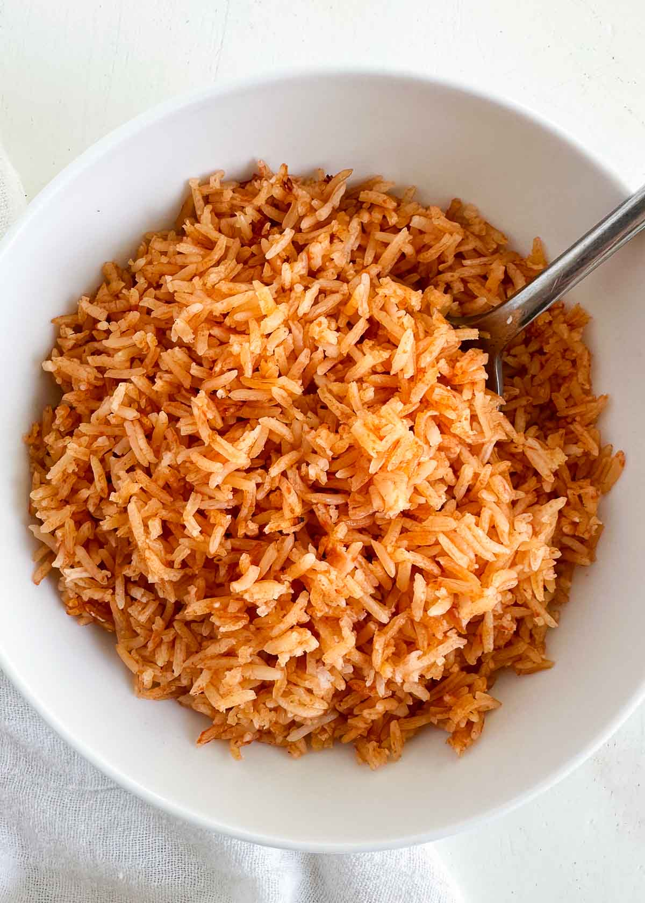

Rice

Description
Ingredients
- 2 cups long grain white rice
- 5 cups of water
- 2 roma tomatoes
- 1/2 onion
- 1 Tablespoon caldo de pollo
Steps
- Wash rice
- Blend water, tomatoes, garlic, onion, and caldo de pollo
- Put rice in pre heated, oil covered, deep dish pan
- Let fry for 5-10 minutes, occasionally stirring
- Add rice mix
- Cover and let cook for about 15 minutes
- Enjoy!
>